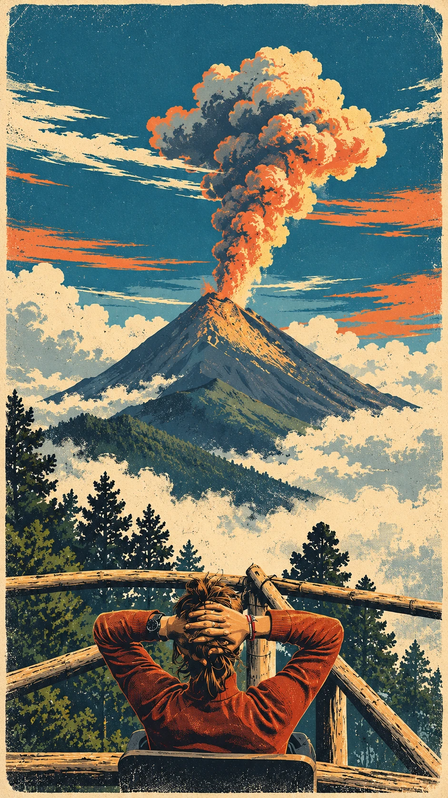

Hi, I'm Iván.
I love traveling, science, and history.
I plan to use robotics and machine learning one day to explore archaeological sites and discover the human past.

I love traveling, science, and history.
I plan to use robotics and machine learning one day to explore archaeological sites and discover the human past.
